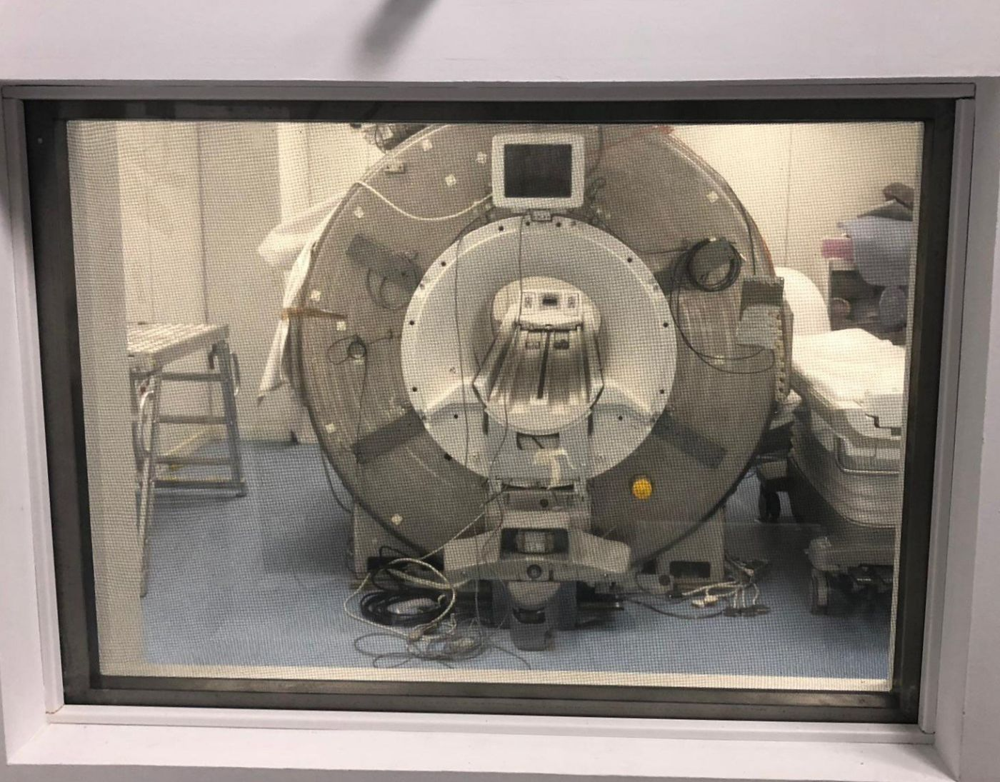
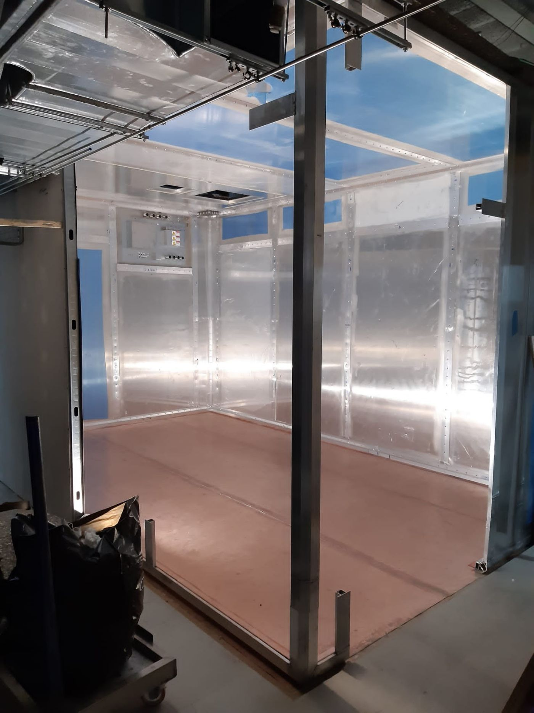
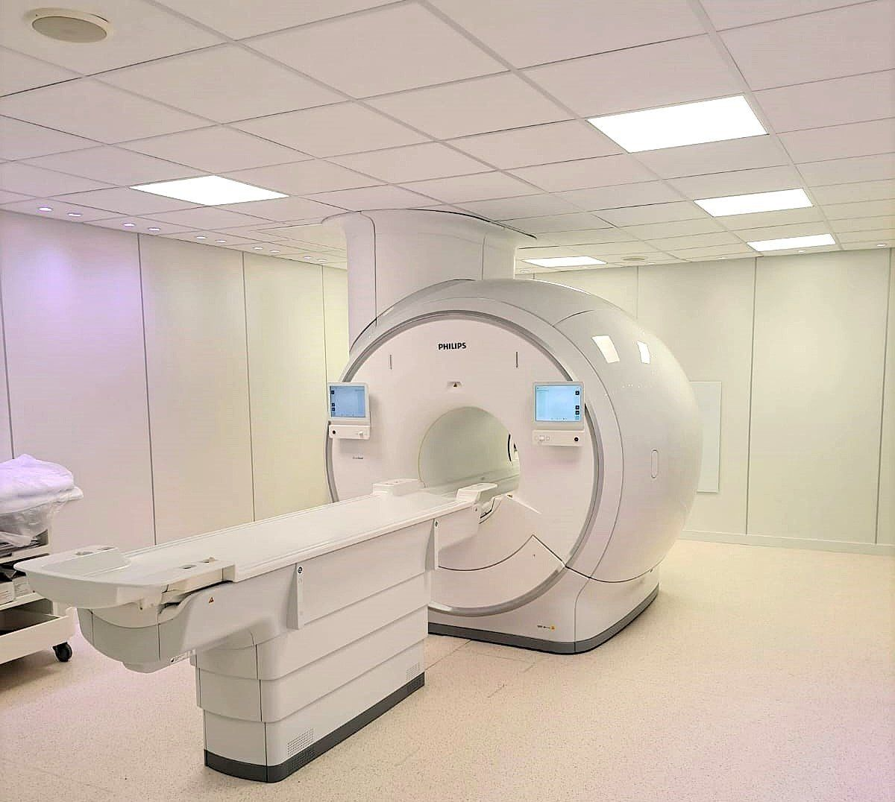
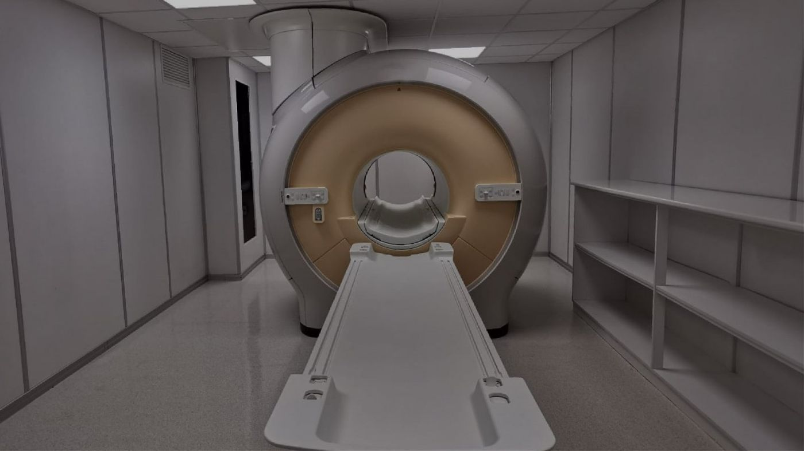

Asesoría técnica¿Necesita asesoramiento?
Antes de comprar el equipo o reformar la sala, medimos el entorno y le decimos qué apantallamiento necesita.
- Medición de radiofrecuencia
- Estudio de campo magnético
- Cálculo y propuesta técnica
Expertos en apantallamiento electromagnético
Diseñamos, fabricamos en Cantabria e instalamos el apantallamiento de salas de RM para hospitales y clínicas de España, Francia y Portugal.

Su proyecto, nuestra solución
No todos los centros llegan con lo mismo. Puede que tenga una duda técnica sobre interferencias, que esté preparando una sala de resonancia nueva o que necesite revisar una sala que ya funciona.
Elija lo que mejor encaja con su caso y siga desde ahí.

Asesoría técnicaAntes de comprar el equipo o reformar la sala, medimos el entorno y le decimos qué apantallamiento necesita.

ProyectosDiseñamos, fabricamos e instalamos la jaula de Faraday y el apantallamiento magnético a la medida del equipo y del espacio.

MantenimientoAuditamos y reparamos cualquier instalación, aunque la haya hecho otra empresa, y certificamos que cumple la normativa.
Obra real
Una selección de salas de resonancia en las que hemos hecho la jaula, el apantallamiento y los acabados. Pulse en cualquiera para verla en grande.
Áreas de especialización
Del cálculo de ingeniería inicial al último detalle de confort para el paciente. ¿Sabe ya lo que necesita? Elija el área y pídanos precio directamente.
Recintos de alta precisión que aíslan la sala de resonancia de cualquier interferencia externa.
→Confinamos el campo del imán para proteger los equipos de alrededor y al personal.
→Certificamos los niveles de atenuación según la normativa internacional de seguridad.
→Análisis de inducción para que los equipos más sensibles trabajen estables.
→Iluminación, skylights y vinilos que hacen la prueba más llevadera al paciente.
→Integramos el blindaje técnico con un acabado sanitario limpio y funcional.
→Alta sensibilidad para impedir que entren objetos ferromagnéticos en la sala.
→Monitorización continua con alarma ante niveles bajos de oxígeno.
→Imagen en alta definición durante la prueba para reducir el estrés y la ansiedad.
→La auditamos, la reparamos y certificamos que cumple, sin importar quién la construyó.
→Cómo trabajamos
En un hospital la tecnología no puede fallar. Por eso llevamos el proyecto entero, sin pasar la sala de mano en mano.
Medimos la radiofrecuencia y el campo magnético del emplazamiento.
Calculamos la jaula y el apantallamiento para su equipo y su espacio.
Fabricamos en nuestra planta de El Astillero, en Cantabria.
Montamos la jaula, el apantallamiento y los acabados de la sala.
Medimos la atenuación final y le entregamos el certificado.

Quiénes somos
Apantallamiento electromagnético para hospitales y clínicas, del primer cálculo al certificado final.
Empezamos hace más de 30 años en Burgos y poco después montamos la fábrica en Cantabria. Desde allí fabricamos e instalamos jaulas de Faraday y apantallamientos magnéticos para salas de resonancia en toda España, Francia y Portugal. Hoy somos la única empresa que los fabrica en España.
Trabajamos con cualquier fabricante de resonancia y adaptamos cada sala al equipo, al espacio y a los plazos del centro. Nuestro trabajo es que la sala funcione como debe desde el primer día.

¿Cómo podemos ayudarle?
01 · Soporte técnico
Cuéntenos qué sala tiene o qué quiere montar. Cuanta más información, más exacta será la propuesta.
Ayuda mucho incluir: marca y modelo del equipo, planos de la sala, fotos del espacio y fecha prevista.
Enviar mensaje02 · Sobre Proysa
Calculamos, fabricamos, instalamos y medimos con nuestro propio equipo. Cubrimos todo el espectro de protección electromagnética de la sala.
Desde salas nuevas hasta reformas por cambio de equipo y revisiones de salas existentes.
Ver áreas de trabajo03 · Datos de empresa
Preguntas frecuentes
Sí. Gestionamos proyectos en cualquier punto de la península y en el extranjero desde nuestra fábrica en Cantabria. Hoy trabajamos en España, Francia y Portugal.
Sí. Nuestra ingeniería es compatible con todos los fabricantes de resonancia magnética del mercado.
Sí. Auditamos y reparamos cualquier instalación de apantallamiento para certificar que cumple la normativa vigente, sin importar quién la construyó.
Contacto
Le respondemos con la solución técnica que necesita su centro.